Author: Zhiqi Yu
Date: 6/24/2022
The RiceMapEngine is a web application that uses Google Earth Engine APIs to perform rice mapping with remote sensing.
This application mainly includes three sub-applications, namely Phenology Explorer (PE), Empirical Thresholding (ET), and Supervised Classification (SC), that serve different purposes in the workflow of rice mapping.
Specifically, PE provides functions to inspect ground truth samples by the phenology information acquired from remote sensing. By identifying phenology stages of ground truth samples based on remote sensing-generated phenology information, users can identify true rice samples and false rice samples, which should be removed for further analysis. The PE also generates empirical thresholds from ground truth samples for user-defined phenology phases.
The ET and SC are two methods for rice classification. ET allows rice mapping using empirical thresholds. Thresholds represent value ranges for the remote sensing images within certain phenological phases. The thresholds can be generated from PE or from previous experience. The classification result is generated simply by determine if a pixel value is within the provided value range. Ground truth samples are not required for this method.
SC is the good old supervised classification method that trains machine learning models with ground truth samples and classify remote sensing images to rice maps. Ground truth samples are required for this method.
Following sections give details of each sub-application.
The UI of PE is shown in the following figure:
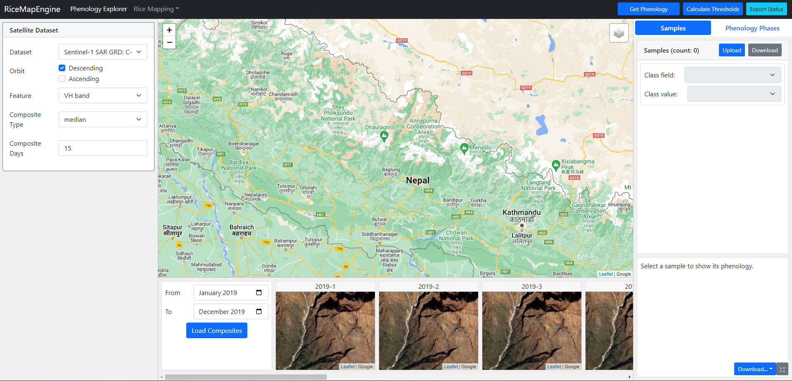
The overall UI is divided into several panels.
The left panel UI allows users to select what and how satellite images are used to extract phenology information.
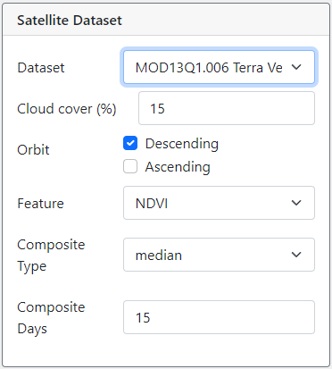
These parameters are available for customization:
The middle panel is divided into two areas, one being a map for visualization, and another to show monthly false color composites to assist inspecting phenology information.
In the bottom area, users can define the overall date range for phenology inspection. For demonstration purpose, the figure below selects the date range to be from the start of January 2019 to the end of March 2019, and correspondingly, three maps that correspond to each of the three months will be shown. Clicking the "Load Composites" button will load 30-day false color composite from Sentinel-2 or Landsat-8.
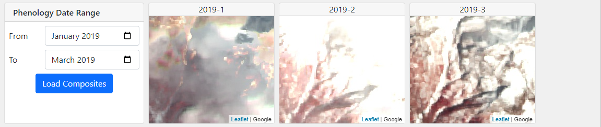
After ground truth samples are loaded into the application, and a sample is selected, all the maps will center around the selected sample automatically.
The right panel includes two tabs, namely Samples and Phenology Phases. The sample tab as shown in the figure below includes a list of ground truth samples uploaded to the application, and a chart that shows time-series satellite image data that assumbly captures critical phenology information. The phenology phases as shown in the second figure below allows users to set up the date ranges of phenology phases, and acquire thresholds for those phases according to the satellite image data.
The sample tab is shown in figure below.
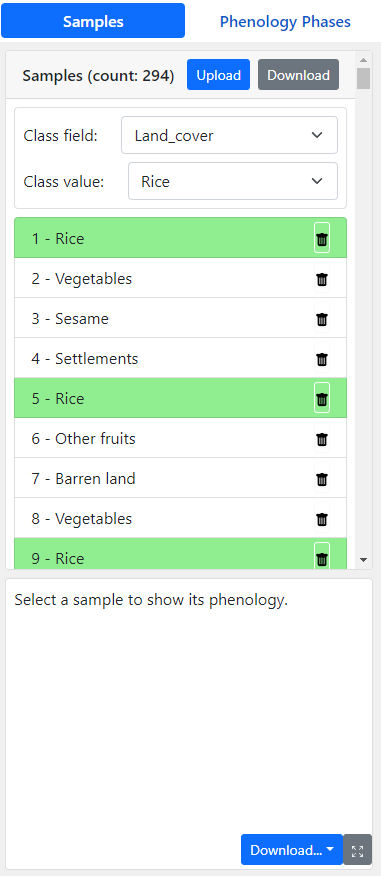
Ground truth sample upload/download
Users use the Upload button to load the ground truth samples to the application. The accepted file should be a zipped shapefile. The Download button can be used to download the modified version of ground truth samples from the application.
Once the ground truth samples are loaded in the application, several things will happen:
In the sample container, there are two parameters that are necessary:
Changing the class field and class value has several effects:
The figure below shows how the app will look like when a sample is selected:
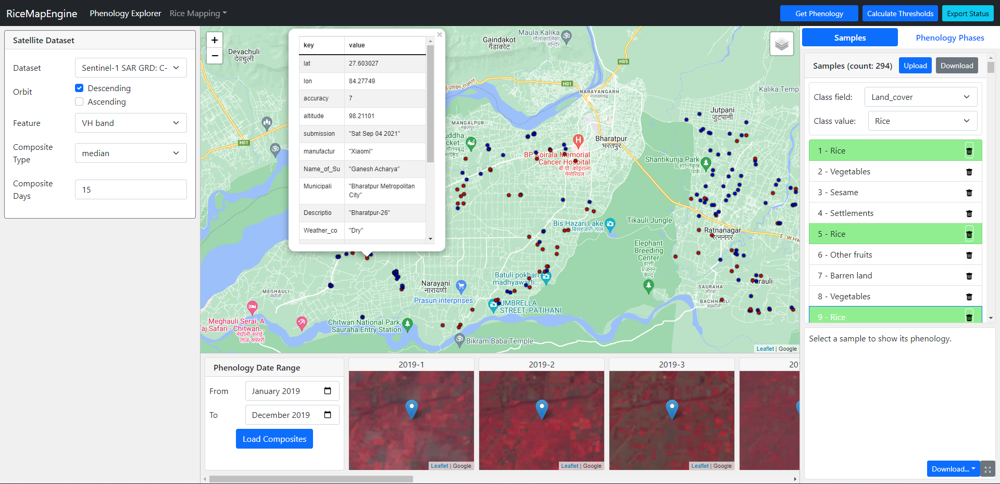
Phenology Inspection
After the sample is loaded into the application, users can click the "Get Phenology" button to the top right corner of the header. This will sample from satellite images at ground truth samples locations and attach satellite image data values to each sample. Then, users can click on samples in the list to see the time-series satellite data values on the chart area.
The figure below shows how the figure will look like once a sample is selected:
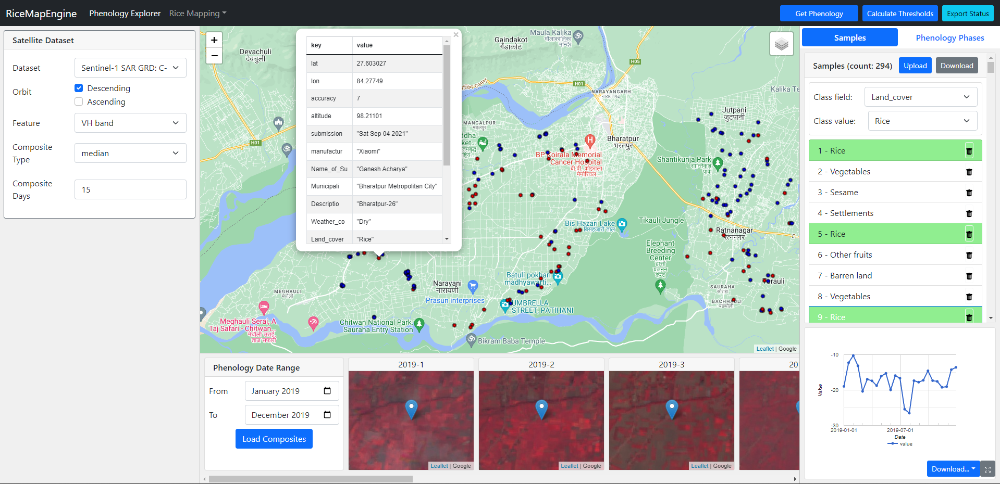
Note: You need to re-select a sample to see the chart after the "Get Phenology" step finishes.
In the "phenology phases" tab, users can edit names and date ranges of phenology phases as they like. The figure below shows how to add, delete, and edit a phenology phase. Note that the threshold values are not editable as they will be calculated automatically.
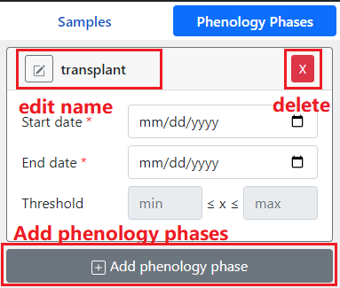
Calculate thresholds for phenology phases
After defining the time frame of each phenology phases, users can click the "Calculate Thresholds" button to calculate the threshold values using the chosen satellite image data and all the target class ground truth samples. The algorithm to calculate the thresholds are as follows:
The ET is the first method of rice classification. The overall UI is divided into three parts as the same as PE.
The left panel contains the same parameter settings as PE plus additional UI controls that specify auxiliary datasets to be used. The auxiliary datasets include:
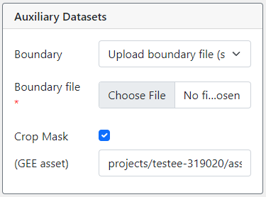
The right panel, as shown in the figure below, is similar to the "Phenology Phases" tab from the right panel of PE.
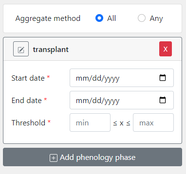
The middle panel contains the same map and a bottom area. The bottom area is to show a log of activities, which include activities in both ET and SC.
Specifically, the logs will record the time when a classification attempt is made and what parameters are set that conducted the classification.
The figure below shows two logs after conducting a rice mapping task using ET. The first log records all parameters in JSON format, and once the classifiaction is finished, the second log shows the rice area.
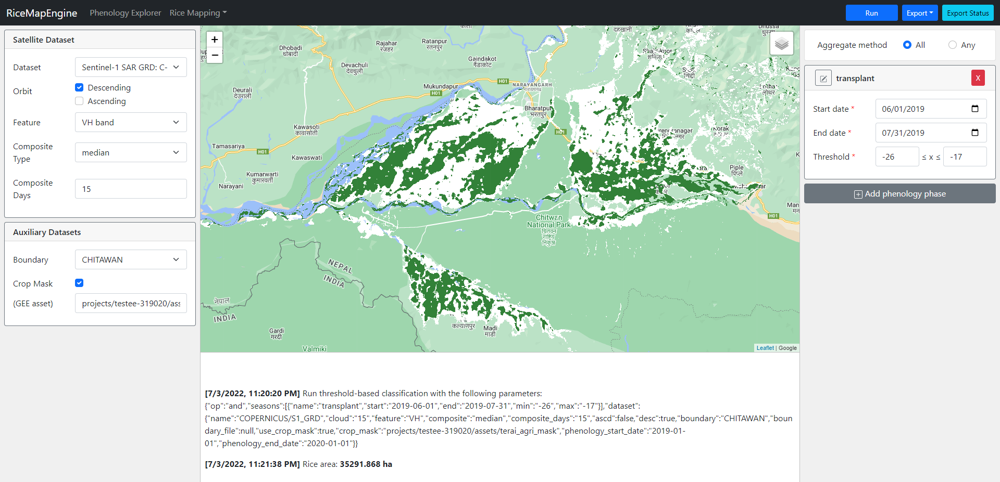
There are three buttons on the top bar for ET.
SC is another method of rice mapping. This method uses ground truth data to train machine learning models, which will be used to produce rice maps.
In addition to the satellite data-related parameters and auxiliary dataset parameters, SC include more parameters related to machine learning models and the training process.
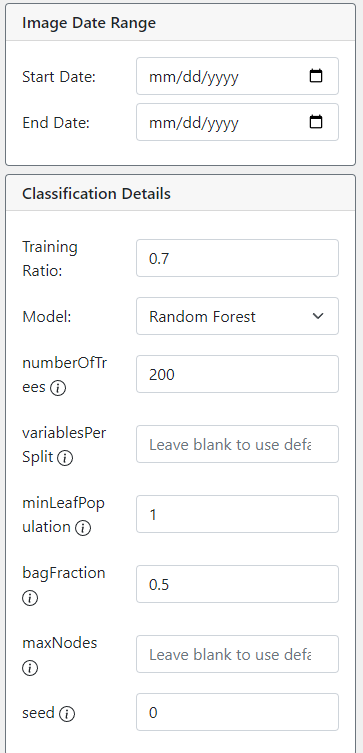
The right panel is exactly the same as the sample container as described in 2.2.1.
Note that while the "class field" and "class value" are not required to be set in PE, they are required to make SC work.
The mid panel is exactly the same as the mid panel as described in 3.3.
In addition to the area of rice, the log panel of SC also shows the model testing results including the confusion matrix, overall accuracy, and the Cohen's Kappa score. Axis 0 (the rows) of the matrix correspond to the actual values, and Axis 1 (the columns) to the predicted values, and 0 means non-rice and 1 means rice. The figure below shows an example of the log after performing a successful rice mapping using SC:
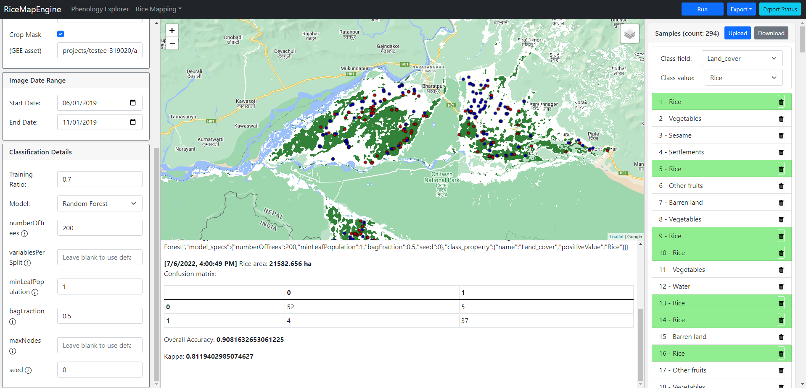
The top bar of SC is exactly the same as ET.
Start an export task
Export function is available for ET and SC. Export is a function that is similar to the export function in GEE online code editor. It allows retrieving processing results in its original spatial resolution even if the processing is complicated and file size is large with a sacrifice of time.
In RiceMapEngine, the exporting function can be accessed by clicking the "Export" -> "Export to Google Drive" button. Clicking this button will run the classification algorithm with the parameters that are set in the app and no results will be shown on the map. Instead, a unique ID will be generated for the export task. The ID will look like in the figure below:
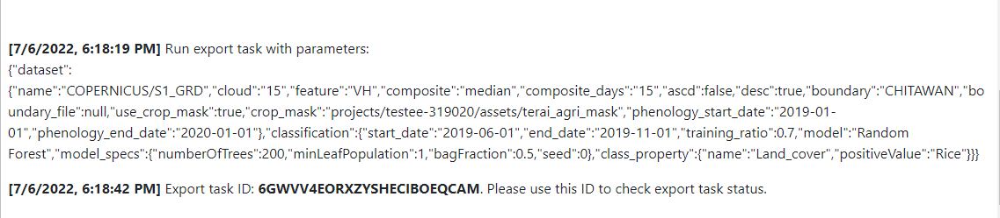
Check task status
To check the status of a task created before, users can click the "Export Status" button on the top right of the app. A dialog will be opened which contains a search bar:
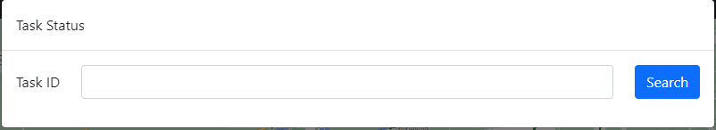
Users can input the generated ID into the search bar to check the status of that task. For example, below is the status of the task we created just now:
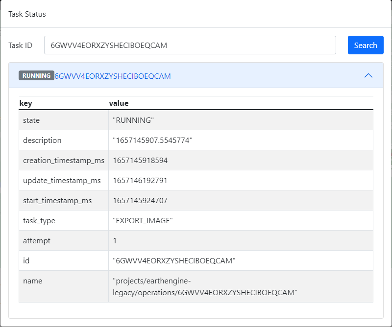
Note that the badge before the task ID in the figure shows "Running", which means the task is currently running on the Google Cloud. There are many more task status that you may see, check here for a complete list of status a task may have.
Once a task is completed, users can see a download button, which can be used to download the result as a GeoTIFF file to the local machine.
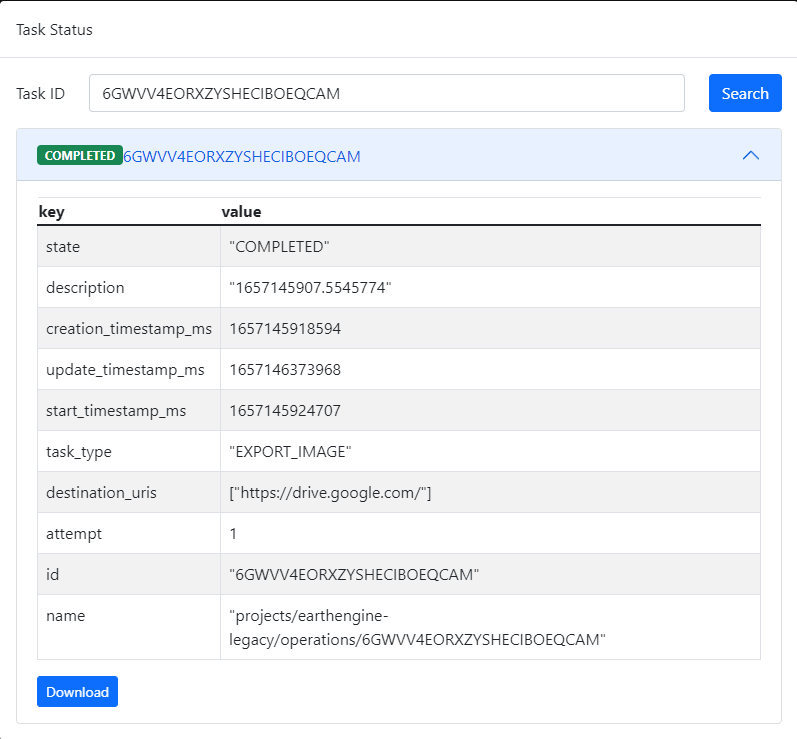